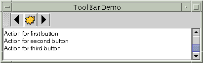

Feedback Form
|
|
Start of Tutorial > Start of Trail > Start of Lesson |
Search
Feedback Form |
AJToolBaris a container that groups several components -- usually buttons with icons -- into a row or column. Often, tool bars provide easy access to functionality that is also in menus. How to Use Actions describes how to provide the same functionality in menu items and tool bar buttons.
The following pictures show an application that contains a tool bar above a text area.
 By default, the user can drag the tool bar to a different edge of its container or out into a window of its own. The next figure shows how the application looks after the user has dragged the tool bar to the right edge of its container.For the drag-out behavior to work correctly, the tool bar must be in a container that uses BorderLayout. The component that the tool bar affects is generally in the center of the container. The tool bar must be the only other component in the container; it must not be in the center.The next figure shows how the application looks after the user has dragged the tool bar outside its window.
The following code implements the tool bar. You can find the entire program in
ToolBarDemo.java. It relies on three images.
Note: If any buttons in your tool bar duplicate functionality of other components, such as menu items, then you should probably create and add the tool-bar buttons as described in How to Use Actions.public ToolBarDemo() { ... JToolBar toolBar = new JToolBar(); addButtons(toolBar); ... JPanel contentPane = new JPanel(); contentPane.setLayout(new BorderLayout()); ... contentPane.add(toolBar, BorderLayout.NORTH); contentPane.add(scrollPane, BorderLayout.CENTER); ... } protected void addButtons(JToolBar toolBar) { JButton button = null; //first button button = new JButton(new ImageIcon("images/left.gif")); ... toolBar.add(button); //second button button = new JButton(new ImageIcon("images/middle.gif")); ... toolBar.add(button); //third button button = new JButton(new ImageIcon("images/right.gif")); ... toolBar.add(button); }By adding a few lines of code to the preceding example, we can demonstrate some more tool bar features:
Here is a picture of the new UI,
- Using the
setFloatable(false)to make a tool bar immovable.- Adding a separator to a tool bar.
- Adding a non-button component to a tool bar.
You can find the entire program in ToolBarDemo2.javaBecause the tool bar can no longer be dragged, it no longer has bumps at its left edge. Here's the code that turns off dragging:
The biggest visible difference is that the tool bar contains two new components, which are preceded by a blank space -- a separator. Here is the code that adds the separator:toolBar.setFloatable(false);Here is the code that adds the new components:toolBar.addSeparator();You can easily make the components in a tool bar be aligned along their tops or bottoms, instead of centered, by invoking the//fourth button button = new JButton("Another button"); ... toolBar.add(button); //fifth component is NOT a button! JTextField textField = new JTextField("A text field"); ... toolBar.add(textField);setAlignmentYmethod. For example, to align the tops of all the components in a tool bar, invokesetAlignmentY(TOP_ALIGNMENT)on each component. Similarly, you can use thesetAlignmentXmethod to specify the alignment of components when the tool bar is vertical. This flexibility of layout is possible because tool bars useBoxLayoutto position their components. For more information, see How to Use BoxLayout.
The following table lists the commonly usedJToolBar
Method Purpose JToolBar()Create a tool bar. JButton add(Action)
Component add(Component) void addSeparator()Add a component (usually a button) to the tool bar. If the argument to addis anActionobject, then the tool bar automatically creates aJButtonand adds it.void addSeparator()Add a separator to the end of the tool bar. void setFloatable(boolean)
boolean isFloatable()The floatable property is true by default, to indicate that the user can drag the tool bar out into a separate window. To turn off tool bar dragging, use toolbar.setFloatable(false).
This table lists examples that useJToolBarand where those examples are described.
Example Where Described Notes ToolBarDemoThis page. A basic tool bar with icon-only buttons. ToolBarDemo2This page Demonstrates a non-floatable tool bar containing a separator and non-button components. ActionDemoHow to Use Actions Implements a tool bar using Actionobjects.
|
|
Start of Tutorial > Start of Trail > Start of Lesson |
Search
Feedback Form |